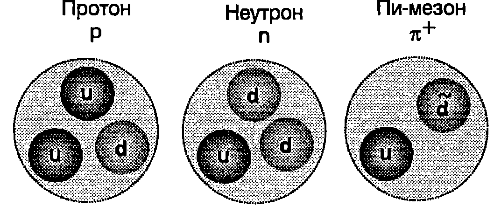

В началото на 30-те години на XX век физиците смятат, че цялата материя е съставена само от три вида частици: електрони, протони и неутрони. Те били наречени елементарни частици, защото се е предполагало, че са най-малките, неделими късчета материя, които нямат вътрешна структура, т.е. не са изградени от други, по-малки частици.
След създаването на мощни ускорители на заредени частици става възможно да се изследва ударът между две частици, имащи огромна кинетична енергия. Например един от най-големите ускорители в света в Женева, Швейцария, ускорява протоните до енергия около eV. Изследванията показват, че при такива удари се създават нови частици, които също е прието да се наричат елементарни. Досега са открити стотици подобни частици, които са изключително нестабилни и след много кратък интервал от време, наречен време на живот, се разпадат на други частици.
Адрони и лептони
В зависимост от взаимодействията, в които участват, елементарните частици (с изключение на фотоните) се разделят на две големи категории: адрони и лептони. Адрони се наричат частиците, които участват в силни взаимодействия. Има два класа адрони мезони и бариони, които се различават по маса и спин.
\begin{table}
\begin{tabular}{ccccccc}
Клас& Частица& Символ& \begin{tabular}{@{}c@{}}Анти-\\частица\end{tabular}& \begin{tabular}{@{}c@{}}Маса\\ ($\mathrm{MeV/c^2}$)\end{tabular}& Време на живот, s& Схема на разпадане*\\
Лептони& Електрон& $e^-$& $e^+$& 0,511& Стабилна& \\
& Неутрино ($e$)& $\nu_e$& $\tilde\nu_e$& 0 (?)& Стабилна& \\
& Мюон& $\mu^-$& $\mu^+$& 105,7& $2,\!20.10^{-6}$& $e^{-}\tilde{\nu}_e \nu_\mu$\\
& Неутрино ($\mu$)& $\nu_\mu$& $\tilde\nu_\mu$& 0 (?)& Стабилна& \\
& Тау-лептон& $\tau^-$& $\tau^+$& 1784& $<2.10^{-13}$& $\mu^{-}\tilde{\nu}_\mu \nu_\tau$, $e^{-}\tilde{\nu}_\mu\nu_\tau$\\
& Неутрино ($\tau$)& $\nu_\tau$& $\tilde\nu_\tau$& 0 (?)& Стабилна& \\
\begin{tabular}{@{}c@{}}Адрони\\Мезони\end{tabular} & \begin{tabular}{@{}c@{}}Пион\\(пи-мезон)\end{tabular} & $\pi^+$& $\pi^-$& 139,6& $2,\!6.10^{-8}$& $\mu^+ \nu_\mu$\\
& & $\pi^0$& $\pi^0$& 135,0& $0,\!83.10^{-16}$& $2\gamma$\\
& \begin{tabular}{@{}c@{}}Каон\\ (ка-мезон)\end{tabular}& $K^+$& $K^-$& 493,7& $1,\!24.10^{-8}$&$\mu^+\nu_\mu$, $\pi^+\pi^0$\\
& & $K_s^0$& $\tilde K_s^0$& 497,7& $0,\!89.10^{-10}$&$\pi^+\pi^-$, $2\pi^0$\\
& Ета& $\eta^0$& $\eta^0$& 548,8& $<10^{-18}$& $2\gamma$, $3\pi$\\
Бариони& Протон& $p$& $\tilde p$& 938,3& Стабилна&\\
& Неутрон& $n$& $\tilde n$& 939,6& 920&$pe^-\tilde{\nu}_e$\\
& Ламбда& $\Lambda^0$& $\tilde\Lambda^0$& 1115,6& $2,\!6.10^{-10}$&$p\pi^-$, $n\pi^0$\\
& Сигма& $\Sigma^+$& $\tilde\Sigma^-$& 1189,4& $0,\!80^{-10}$&$p\pi^0$, $n\pi^+$\\
& & $\Sigma^0$& $\tilde\Sigma^0$& 1192,5& $6.10^{-20}$&$\Lambda^0\gamma$\\
& & $\Sigma^-$& $\tilde\Sigma^+$& 1197,3& $1,\!5.10^{-10}$&$n\pi^-$\\
& Хи& $\Xi^0$& $\tilde\Xi^0$& 1315& $2,\!9.10^{-10}$&$\Lambda^0\pi^0$\\
& & $\Xi^-$& $\Xi^+$& 1321& $1,\!64.10^{-10}$&$\Lambda^0\pi^-$\\
& Омега& $\Omega^-$& $\Omega^+$& 1672& $0,\!82.10^{-10}$&$\Xi^0\pi^-$, $\Lambda^0 K^-$\\
\end{tabular}
Някои елементарни частици и техни свойства
\label{table:110.1}
\end{table}
- Означенията в тази колона от рода на , показват, че има два начина на разпадане на съответната частица: и .
Мезоните (от гр. мезос среден) имат цял спин (0 или 1), а масите им лежат между масата на електрона и масата на протона. Всички мезони са нестабилни частици. Като крайни продукти след разпадането им се получават електрони, позитрони, неутрино и фотони.
Протоните и неутроните принадлежат на класа на барионите (от гр. варис тежък). Масата на барионите е равна или е по-голяма от масата на протона. Всички бариони имат полуцял спин (1/2 или 3/2). С изключение на протона те също са нестабилни частици. Дори неутроните, когато не са свързани в ядра, живеят средно само 920 s (15 min), след което се разпадат на протони, електрони и антинеутрино. В крайните продукти след разпадането на всички нестабилни бариони задължително присъстват протони.
Лептоните (от гр. лептос -лек), за разлика от адроните, не участват в силните взаимодействия. Те участват във всички останали взаимодействия (електромагнитни, слаби, гравитационни). Семейството на лептоните е най-малобройно. Досега са открити само три вида заредени лептона: електрон, мюон и тау лептон. На всеки от тях съответства по един вид неутрино: електронно неутрино, мюонно неутрино и тау неутрино. Неутриното е електронеутрална частица. Предполага се, че масата му е нула или е много малка. Неутриното са също толкова често срещани обекти, както фотоните. Те имат изключително голяма проникваща способност - например почти безпрепятствено преминават през Земята, Слънцето и другите небесни тела. Неутрино се изпускат при различни ядрени реакции и при разпадането на някои частици. Пристигащите до Земята потоци от неутрино носят информация за ранни те стадии от развитието на Вселената, за процесите в недрата на звездите и Слънцето и др.
В табл. 110.1 са систематизирани някои от основните характеристики на частици от трите класа. За означаване на повечето частиците се използват букви от гръцката азбука. Горе вдясно на буквата се поставя знак +'', -” или “0”, който по-казва какъв е електричният заряд на частицата (, или нула).
Според съвременната класификация основните различия между адроните и лептоните са в тяхната вътрешна структура. Смята се, че лептоните са безструктурни, т.е. те не са изградени от други частици. Затова те се разглеждат като истински елементарни частици. Мезоните и барионите са съставени от кварки.
Кварки
За да обяснят свойствата на елементарните частици, през 1963 година независимо един от друг американските физици Мъри Гел Ман (роден през 1929 г.) и Джордж Цвайг (роден през 1937 г. в Съветския съюз) създават теоретичен модел, съгласно с който всички адрони са изградени от по-малки частици, наречени кварки. Думата кварк'' няма определено смислово значение. С присъщото на физиците чувство за хумор Гел Ман я заимства от роман на известния писател Дж. Джойс, чийто герой в съня си чува странната фраза Три кварка за мистър Марк”. Първоначалният кварков модел на адроните включва три кварка, които се означават със символите u, d и s. Това са първите букви от названията на кварките на английски език (имената са дадени произволно): up (горен), down (долен) и strange (странен). Кварките са единствените частици с дробен електричен заряд, и кваркът има положителен заряд , а d- и s-кварките са носители на отрицателен заряд .
\begin{table}
\begin{tabular}{cccc}
Наименование& Символ& Ел. заряд& Maca (MeV/c$^2$) \\
Горен (up) & u& $+2e/3$& 360\\
Долен (down) & d& $-e/3$& 360\\
Странен (strange)& s& $-e/3$& 540\\
Очарован (charmed)& c& $+2e/3$& 1500\\
Красив (beauty)& b& $-e/3$& 5000\\
Топ (top)& t& $+2e/3$& 173 000\\
\end{tabular}
Характеристики на кварките
\label{table:110.2}
\end{table}
През последните 30 години са открити нови тежки частици, чиито свойства и структура не могат да се обяснят с първоначалния трикварков модел. Това налага неговото усъвършенстване. Според съвременните представи цялата материя е изградена от 6 лептона (вж. табл. 110.1) и от 6 кварка. Някои от характеристиките на кварките са представени в табл. 110.2.
На всеки кварк съответства антикварк (, , , ) със същата маса, но с противоположен електричен заряд.
Строеж на барионите и мезоните
Барионите са изградени от три кварка. На Фиг. \ref{fig:110.1} схематично е показана вътрешната структура на протоните и неутроните. Протонът съдържа два u-кварка и един d-кварк, а неутронът два d-кварка и един u-кварк. Сумарният електричен заряд на трите кварка на протона е . За неутрона: .

`Фиг. 110.1`
Мезоните са изградени от един кварк и от един антикварк (Фиг. \ref{fig:110.1}).
Обърнете внимание, че протоните и неутроните съдържат единствено най-леките кварки (u- и d-кварки). Следователно, въпреки огромното си многообразие, заобикалящият ни материален свят е изграден само от четири истински елементарни частици: от двата най-леки кварка и от двойката най-леки лептони (електрон и електронно неутрино). Останалите кварки и лептони съществуват само в екстремални условия във физичните експерименти с удари между частици с много голяма енергия или при изключително високите температури, създадени на определен етап от еволюцията на някои звездни системи и на Вселената като цяло.
Взаимодействие между кварките
Кварките са заредени частици, но електричните сили нямат съществено значение при тяхното взаимодействие. То се определя от един нов вид заряд, характерен само за кварките. Прието е той да се нарича цветен заряд или само цвят. Съществуват три вида цветни заряди, наречени червен, зелен и син. Антикварките са носители съответно на античервен, антизелен и антисин цветен заряд. Цветните заряди се групират в три двойки противоположни заряди: червен-античервен, зелен-антизелен и син-антисин. Всяка от тях е аналог на противоположните електрични заряди (положителен и отрицателен заряд). Трите кварка в протоните и неутроните (както и в останалите бариони) имат различни цветни заряди: единият кварк е червен, другият е зелен, а третият син. При свързването на три разноцветни кварка се получава безцветен барион, т.е. частица, която не е носител на цветен заряд. Мезоните също са безцветни, защото са изградени от един кварк с определен цветен заряд и един антикварк с противоположния цветен заряд. (Терминът цвят е възприет по аналогия с оптиката, където при смесване на трите основни цвята червен, зелен и син, се получава бяла светлина. Не трябва да се забравя обаче, че цветът е физична характеристика на кварките, която няма нищо общо с нашите зрителни възприятия.) Силите на взаимодействие между кварките се определят от техния цветен заряд. Тези сили са много по-големи от всички останали сили в природата, затова взаимодействието между кварките се нарича силно взаимодействие. Кварките с еднакви цветни заряди се отблъскват, а кварк и антикварк с противоположни цветни заряди се привличат. Например два червени кварка се отблъскват, докато червен кварк и античервен антикварк се привличат и могат да образуват свързана система мезон. Кварките с различни цветни заряди също се привличат. Затова червен, зелен и син кварк могат да образуват свързана система от три взаимно привличащи се частици барион. Ядреното взаимодействие между протоните и неутроните също се дължи на взаимодействието между кварките, т.е. то е силно взаимодействие. Всички адрони участват в силни взаимодействия, докато лептоните, които не са изградени от кварки, не участват в тях.